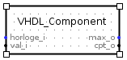
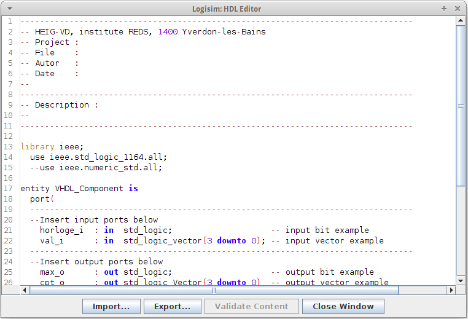

VHDL实体
VHDL实体是可以使用VHDL描述的组件。 它附带一个编辑器，可用于编辑实体并验证它，前提是您的系统上安装了 Questa Advanced Simulator。
创建 VHDL 实体
要创建新的VHDL实体，只需在 explorer panel 中打开 HDL IP 库，然后单击 VHDL 实体 组件即可。 如果该库不可用，您需要加载它：转到 项目 菜单， 加载库 ，然后 内置库 并选择 菜单中的 HDL IP 。

编辑 VHDL 实体

新的 VHDL 实体附带一个默认模板，其中包含两个输入和两个输出。 可以通过单击内容属性来编辑实体，如下所示。

然后可以使用集成的 HDL 编辑器直接使用 VHDL 修改实体。 您还可以通过单击 导入... 按钮导入VHDL文件的内容，或通过单击 导出... 按钮导出您自己的代码。

当您编辑组件时， 验证内容 按钮将会亮起。 只要您安装并配置了 Questa Advanced Simulator，它就可以用来检查您的代码是否有效（有关详细信息，请参阅 ）。 如果是这种情况，单击 Validate 按钮将编译VHDL代码，检查错误并显示一个包含更多信息（如果发现）的窗口。 如果您的代码有效，该按钮将被停用，直到您进行进一步修改。
注意： 如果您没有 Questa Advanced Simulator，或者它被禁用，Logisim 仍会进行一些检查，主要是在端口描述上。
编辑完实体后，您可以单击 关闭窗口 按钮。 如果安装并启用了代码，则 Questa Advanced Simulator 将对其进行验证，Logisim 将自动重新生成实体的符号，添加、删除或更新您可能在代码中添加、删除或更改的任何端口。 如果验证过程中发生错误，将显示一个包含更多信息的窗口，并且您将获得三个选择：
- 仍然关闭并 放弃所有修改 。这可以通过单击 是 来实现。 请注意，对您的实体所做的任何更改都将 永久丢失 。
- 返回编辑器并更正错误。 这可以通过单击 否 来实现。
- 创建 VHDL 代码的备份并关闭编辑器。 这是通过单击 创建备份 按钮，然后选择备份文件的文件夹和名称来实现的。
使用VHDL实体
VHDL 实体的使用方式与任何其他组件一样。 唯一显着的区别是模拟中实体的处理方式。 详细说明请参见 VHDL模拟器 。
下一节: 配置 Questa 高级模拟器 .